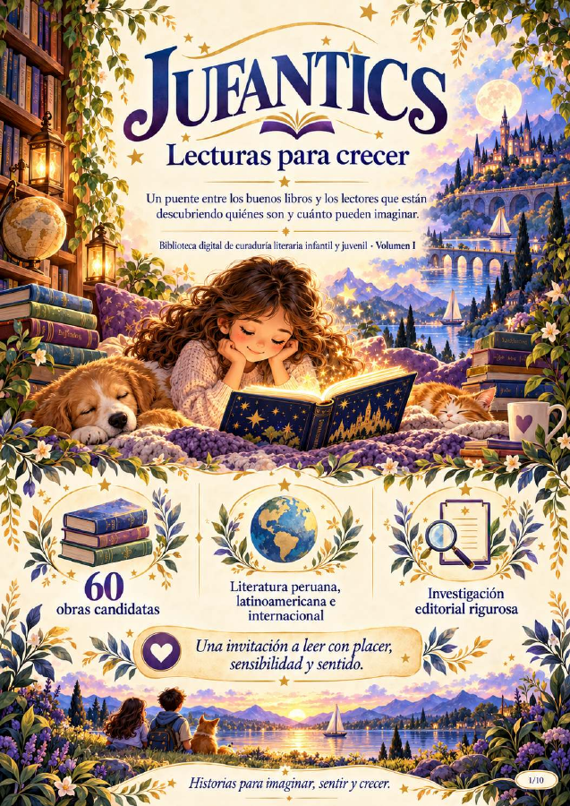
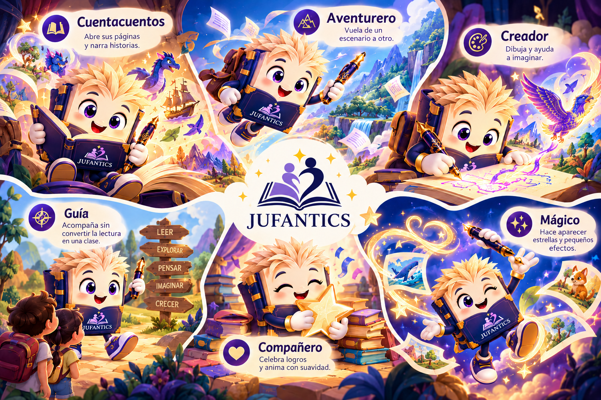

1. DISFRUTEN
Permite que el niño participe en la elección de sus historias. No todas las lecturas necesitan una actividad.

¡Holaaa! Soy Jufántico. ¡Tócame! ¿Quieres que exploremos o leamos juntos?
Lee, escucha, imagina y crea. Un universo donde los libros abren caminos y JUFANTICO te acompaña.
Prototipo navegable V1.6 sin registro ni pagos reales. Narración de prueba disponible en las primeras dos escenas.
Historias propias, cuentos y futuras lecturas autorizadas. La biblioteca crecerá por etapas.
Escribe un final alternativo o inventa un nuevo personaje. Guarda e imprime tu creación original.
Cuéntanos la idea de tu libro. Primero recibimos tu ficha y después preparamos una cotización.
El primer volumen editorial investiga 60 candidatas: 20 de Perú, 20 de Latinoamérica sin Perú y 20 internacionales. Cada ficha mantiene su evidencia y estado de revisión.
Usaremos los audios existentes cuando contemos con archivos y permisos adecuados. Buscaremos voces naturales en español latinoamericano, sin sustituir los audios aprobados sin revisarlos.
Un espacio que crecerá con historias originales y obras autorizadas, sin obligarte a estudiar cada cuento como una tarea.
Abre el lector interactivo heredado de la versión que ya probaste. Doce escenas, con demostración de audio y palabras iluminadas en las dos primeras.
El lugar reservado para nuestras historias propias y sus audios, cuando se integren los originales y sus archivos definitivos.
Consulta la base de 60 candidatas. No implica disponibilidad del texto completo ni autorización de distribución.
La segmentación de la biblioteca editorial se evaluará por obra y madurez lectora; no equivale necesariamente al sistema de actividades pedagógicas.
¡Aquí comienza la aventura! Cuando quieras, usa «¿Te acompaño?» dentro del lector. Las palabras siguen iluminándose con su audio original.
Este módulo incrusta la versión probada, sin reconstruir su lógica de audio, luces y juegos. JUFANTICO acompaña ahora el lector con bienvenida, orientación voluntaria y cierre, sin obligarnos a animar a todos los personajes de cada obra.
Los controles y actividades que se ven dentro del marco pertenecen al lector heredado. Para una distribución pública habrá que revisar y aprobar la edición definitiva del cuento y el audio.
Las 60 fichas provienen de la matriz editorial aportada. Se mantienen sin sustituciones ni aprobaciones automáticas. E0/E1 no significa lectura íntegra E2/E3.

Elige una historia que hayas leído, imagina un nuevo desenlace o inventa tu personaje alternativo. Tu creación es tuya para conservarla.
Completa la ficha y toca «Ver mi aventura» para preparar una versión sencilla que podrás descargar o imprimir.
Esta primera versión guarda todo en el navegador mientras la utilizas. No hay servidor ni cuentas creadas.
Primero cuéntanos qué deseas crear. Revisaremos el alcance y después prepararemos una cotización. No hay precio ni pago automático en esta etapa.
Describimos el tema, el lector y el formato deseado.
Se revisa extensión, ilustraciones, personalización y tiempos.
El precio se calcula después, con las condiciones del servicio.
Se habilita el libro digital contratado y, si se solicita, se cotiza la impresión.
Un pequeño apoyo para disfrutar de las historias sin convertir cada lectura en una tarea. Elige una situación y JUFANTICO te acompaña.
No necesitas convertir cada cuento en una clase. Compartir una historia, escuchar, conversar y respetar los intereses del lector también son maneras de acompañar.
Permite que el niño participe en la elección de sus historias. No todas las lecturas necesitan una actividad.
Una pregunta espontánea puede abrir una conversación. No es necesario examinar al niño después de cada cuento.
Si el niño desea volver a leer, observar ilustraciones o imaginar un final diferente, acompaña su curiosidad.
Leer en voz alta, escuchar audiocuentos y recomendar historias también permite disfrutar la lectura en compañía.
Cada lector tiene su propio ritmo, sus intereses y su manera de disfrutar las historias.

Elige lo que les apetezca hoy. Ningún paso es obligatorio.
Un recorrido opcional, fácil de comenzar y de dejar para otro momento.
Ofrece dos opciones y deja que elija: historia, audio, imágenes o lectura compartida.
Acompaña a su ritmo. Da tiempo, ofrece una pista si la pide y permite hacer pausas.
Una pregunta auténtica basta: «¿Hubo algo que te sorprendió?». Conversar o crear es opcional.
El interés importa más que completar una lista. Cambiar de libro, escuchar una historia, releer o detenerse también son opciones lectoras válidas.
La investigación muestra posibilidades, no resultados garantizados para todos. Leer puede ofrecer lenguaje, imaginación, conversaciones y momentos compartidos; ningún libro es un tratamiento ni asegura cambios de conducta o empatía.
Próximamente: perfiles de lectura privados, favoritos y dispositivos vinculados. El historial no será una calificación del niño.
En preparación · Sin registro realContenido editorial adaptado para JUFANTICS a partir de materiales de investigación y acompañamiento aportados por su creadora. Recomendaciones orientativas, no evaluación ni consejo clínico.